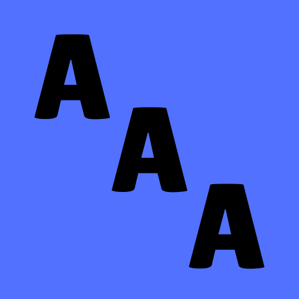

За проекта
Технологии, умения и принос:
- HTML & CSS
- JavaScript
- Responsive Design
- Цялостна архитектура
- Дизайн на логото
- Omexa Player - собствен видео плеър
- Line Counter - инструмент за измерване на редовете
- GitHub Repository
- UI/UX
Принос към проекта:
- Намиране на изображения
- Подбор на снимките
- Изпращането на изображенията
Принос към проекта:
- Изследване на кибертормоза
- Създаване на съдържанието
- Статистически данни
- Точна информация
Интересни факти за проекта
Технически детайли:
HTML кодът е 1598 реда
CSS кодът е 1052 реда
JS кодът е 330 реда
XML кодът е 102 реда
ОБЩО кодът е 3082 реда
За измерването на редовете е използван Line Counter
Източници
Информацията в този сайт е базирана на достоверни източници от водещи организации в областта на детската защита и кибербезопасността:
Национална мрежа за децата
Кибертормоз: Какво представлява и как можем да го спрем
nmd.bg/kibertormoz-kakvo-predstavlyava-i-kak-mozhem-da-go-sprem/УНИЦЕФ България
Кибертормоз: Какво представлява и как можем да го спрем
unicef.org/bulgaria - Кибертормоз статия